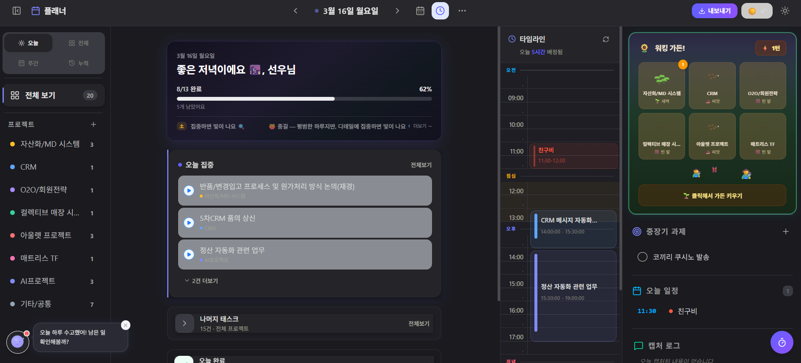
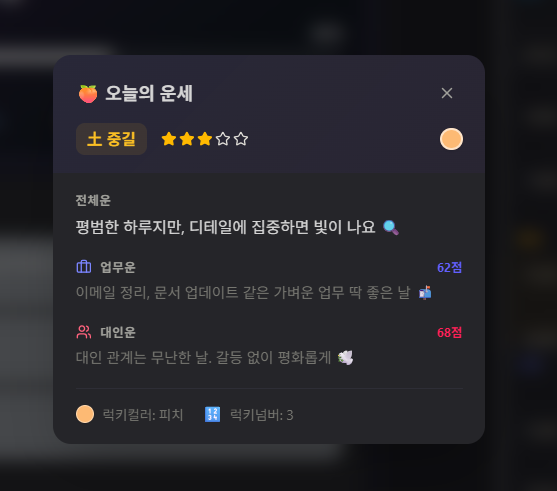
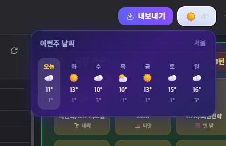
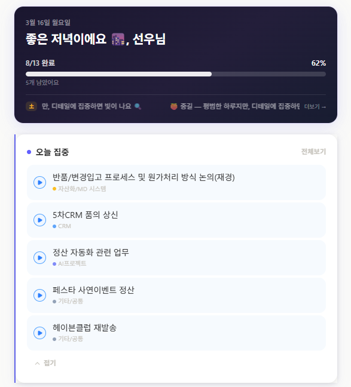
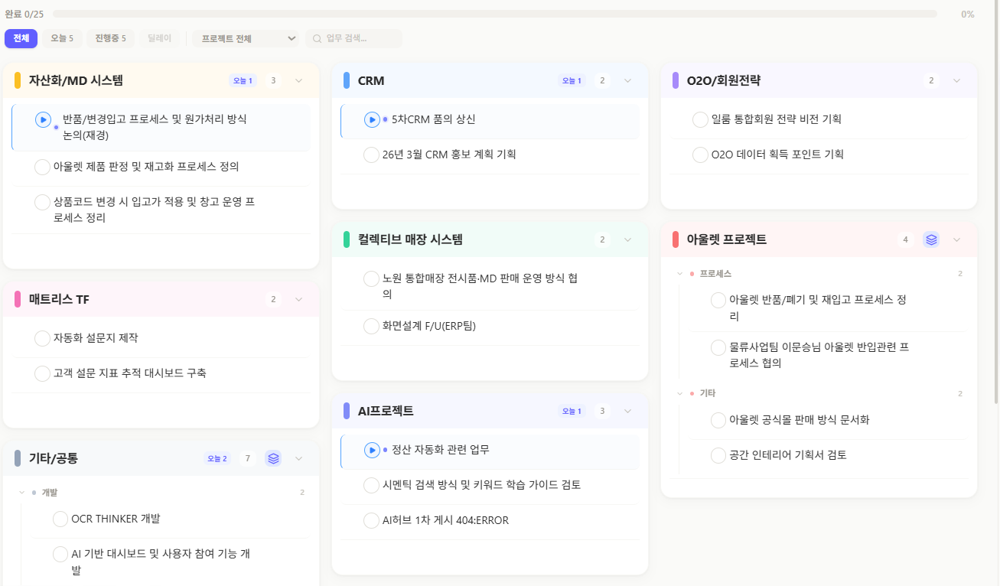
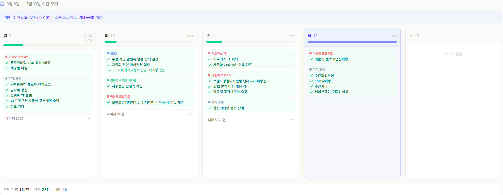
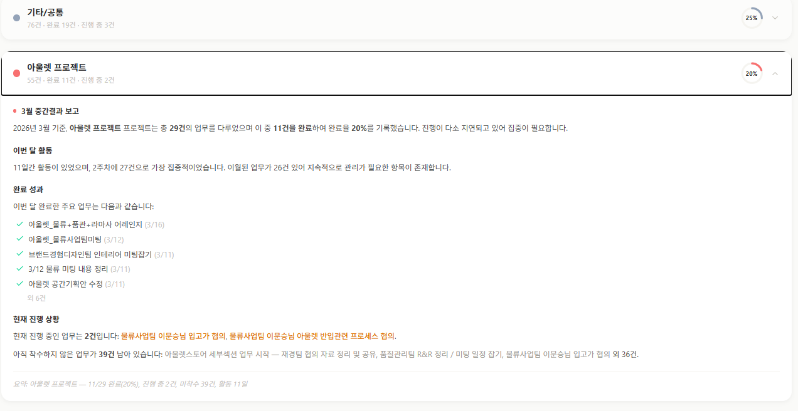
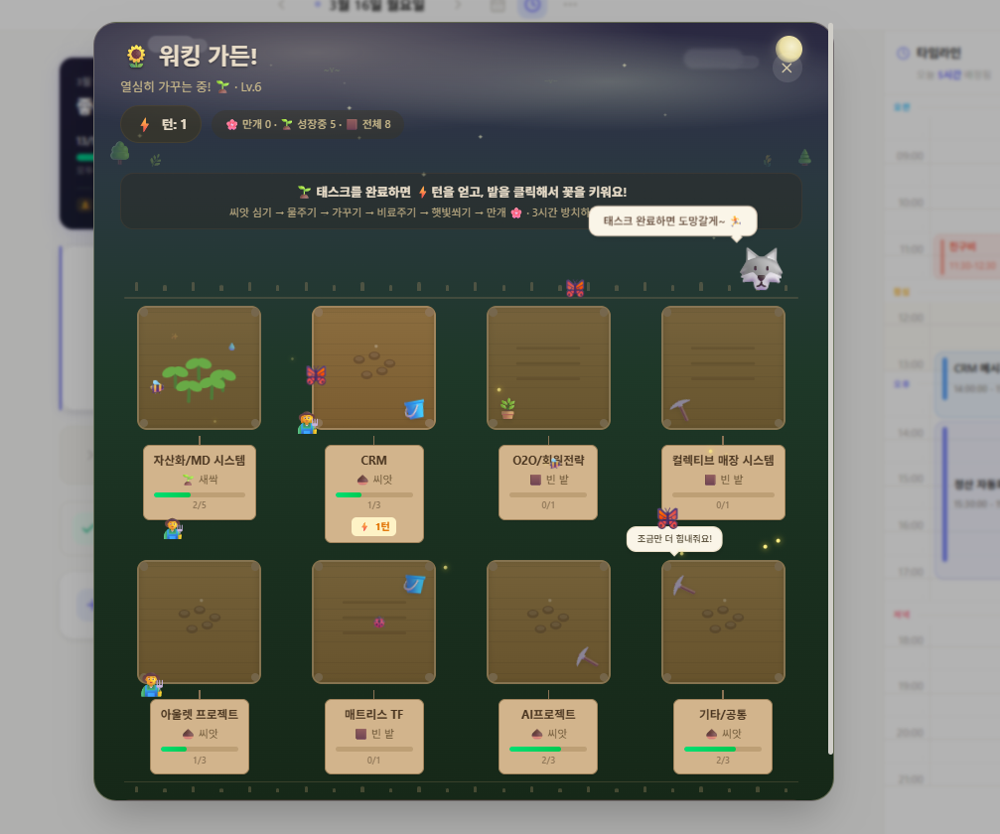

AI를 "도구"가 아닌 "분신"으로 만들어가는 과정의 기록입니다.
- 1편: 나(개인)에서의 발견 — 지금 읽는 글
- 2편: 내 업무에서의 발견 — CRM 대시보드 편 (작성 예정)
- 3편: 내 팀에서의 발견 (작성 예정)
먼저 솔직한 고백 하나
처음 "AI 업무 자동화 해보세요"라는 미션을 받았을 때, 저는 한 30분 정도 멍하니 있었습니다.
자동화. 좋죠. 당연히 해야죠. 그런데 뭘 자동화하지?
엑셀 매크로? 이메일 발송? 회의록 요약? 뭔가 번듯한 걸 해야 할 것 같은데, 막상 시작점이 보이지 않았습니다. "자동화할 업무를 찾는 것도 업무네"라는 생각이 드는 순간, 이건 뭔가 접근이 잘못됐다 싶었습니다.
그래서 방향을 바꿨습니다.
자동화보다 먼저 해야 할 일이 있다. AI가 나를 알게 해야 한다.
어떤 도구든, 나를 모르는 도구는 범용 도구에 불과합니다. AI가 내 업무 패턴을 알고, 내 판단 기준을 알고, 내가 뭘 중요하게 여기는지를 아는 상태가 되어야 — 그때 자동화가 의미 있어집니다. 순서가 다른 겁니다.
그 과정을 세 편으로 기록합니다. 첫 번째는 가장 작은 단위, "나"에서 시작한 이야기입니다.
문제: 8개 프로젝트, 8개의 세계
현재 담당 프로젝트가 8개입니다.
각각 다른 일정, 다른 이해관계자, 다른 우선순위. 할 일은 노션에도 있고, 이메일에도 있고, 카톡에도 있고, 가끔은 제 뇌 어딘가에만 있습니다. 아침에 "오늘 뭐부터 하지?"를 결정하는 데만 20분이 걸리던 날도 있었습니다. 그리고 퇴근할 때는 "오늘 뭘 한 거지?"를 10분 동안 복기하곤 했습니다.
가장 큰 문제는 미완료 항목 수동 이월이었습니다. 어제 못 한 일을 오늘 리스트에 다시 옮겨 쓰는 행위. 단순해 보이지만, 이게 매일 쌓이면 "나는 항상 밀려있다"는 감각이 됩니다.
무언가 바꿔야 했습니다.
해결: 말로 만든 플래너
저는 코딩을 못 합니다. 정확히는, 배운 적이 없습니다.
그래서 Claude에게 말로 설명했습니다. "내가 원하는 플래너는 이렇게 생겼어. 8개 프로젝트를 한눈에 볼 수 있고, 오늘 할 일에 집중할 수 있고, 시간이 어디로 가는지 보이고, 내일이 되면 자동으로 정리되는." 이걸 바이브코딩이라고 부릅니다. 코드가 아니라 의도를 전달하는 방식.
물론 첫 결과물은 처참했습니다. 버튼을 누르면 다른 버튼이 사라지고, 시간을 드래그하면 날짜가 바뀌는, 대단히 창의적인 버그들이 가득했습니다.
그렇게 반복하다 보니, 지금 이런 물건이 나왔습니다.
| 항목 | 내용 |
|---|---|
| 목적 | 다중 프로젝트 업무 관리 + 시간 추적 + AI 비서 |
| 접근 방식 | 바이브코딩 (Claude AI + 자연어 지시) |
| 기술 스택 | React, TypeScript, Supabase, Tailwind CSS |
| AI 모델 | Claude (코드 생성 + 앱 내 챗봇) |
| 현재 규모 | 컴포넌트 36개, 코드 11,000줄+, DB 테이블 10개 |

이제부터가 본론입니다. 기능을 소개하는 게 아니라, 왜 이렇게 만들었는지를 얘기하려 합니다.
기능이 아니라 의도를 설계한다
사주풀이 + 날씨 위젯 — "하루를 여는 리추얼"
플래너를 열면 가장 먼저 보이는 게 오늘의 운세와 날씨입니다.
사주팔자 기반 전체운/업무운/대인운, 럭키컬러와 럭키넘버. 서울 실시간 날씨와 주간 날씨 팝업. 업무 도구에 이게 왜 있냐고요?


처음엔 저도 "좀 유치한 거 아닌가" 싶었습니다. 그런데 생각해보면, 좋은 업무 도구의 첫 번째 조건은 "쓰고 싶게 만드는 것"입니다. 아침에 플래너를 열게 만들어야 플래너가 의미 있습니다.
날씨와 운세는 정보가 아니라 하루의 톤을 세팅하는 장치입니다. "오늘 대인운이 좋네, 어려운 미팅을 오늘 잡아볼까"라거나, "비 오는 날이니까 외부 일정보다 내부 정리에 집중하자"처럼. 업무 도구이기 전에, 내 하루를 여는 공간이 되게 만들고 싶었습니다.
4가지 뷰 — "시야의 줌인/줌아웃"
오늘 뷰: 대시보드 + 오늘 할 일만 집중
전체 뷰(프로젝트): 8개 프로젝트 매이슨리 그리드
주간 뷰: 월~금 5컬럼 + 시간 할당 차트
누적 뷰(히스토리): 월별 네비게이션 + 성과 조회




단순히 화면을 4개로 나눈 게 아닙니다. 일을 4개의 시간 축으로 본다는 설계입니다.
오늘 뷰는 "지금 뭐 해야 하지"의 렌즈입니다. 전체 뷰는 "나 지금 뭘 하고 있지"의 렌즈. 주간 뷰는 "이번 주 밸런스가 맞나"를 보는 렌즈. 누적 뷰는 "나 잘하고 있나"를 확인하는 렌즈.
같은 할 일 데이터인데, 어떤 렌즈로 보느냐에 따라 완전히 다른 질문이 나옵니다. 이게 노션이나 일반 투두앱에는 없는 것입니다. 그 앱들은 데이터를 보여주지만, 어떤 시야로 볼지는 본인이 알아서 해야 합니다. 저는 시야 자체를 설계하고 싶었습니다.
워킹가든 — "감정으로 업무를 읽는 장치"

이게 제가 가장 애착을 갖는 기능입니다. 그리고 처음 보는 사람들이 가장 의아해하는 기능이기도 합니다.
8개 프로젝트가 각각 밭입니다. 할 일을 완료할수록 그 밭의 식물이 자랍니다. 씨앗에서 새싹, 묘목, 꽃, 나무까지. 농사꾼 캐릭터가 밭 사이를 걸어다니고, 낮에는 햇살 파티클이 내려앉고, 밤에는 분위기가 달라집니다. 민들레 홀씨가 날리기도 합니다. 그리고 플래너를 3시간 열지 않으면 늑대가 나타나 농사꾼의 턴을 빼앗습니다.
업무 도구에 늑대가 등장하는 건 저도 처음 만들어봤습니다.
그런데 이 기능의 진짜 의도는 "업무 도구를 열고 싶게 만드는 것"입니다. 할 일을 강제하는 게 아니라, 내 식물이 잘 자라고 있는지, 늑대가 오지는 않았는지 궁금해서 자연스럽게 열게 되는 것.
그리고 더 중요한 건, 식물이 프로젝트별로 따로 자란다는 점입니다. 어떤 밭이 씨앗 상태에 멈춰있다면, 그 프로젝트를 방치하고 있다는 신호입니다. 숫자나 퍼센트가 아니라, 시들어가는 식물이라는 직관적인 이미지로. 감정이 데이터보다 빠르게 상태를 전달합니다. 저는 그 점을 노린 것입니다.
타임라인 + GCal 동기화 — "보이지 않던 시간을 보이게"
08:30부터 21:00까지의 타임라인에 할 일을 드래그앤드롭으로 배치할 수 있습니다. 현재 시간을 나타내는 빨간 선이 실시간으로 움직이고, 구글 캘린더 이벤트가 자동으로 오버레이됩니다.
이 기능의 핵심은 GCal 동기화입니다.
회의가 타임라인에 이미 올라와 있으면, 오늘 실제로 쓸 수 있는 시간이 한눈에 보입니다. "오늘 할 일 7개인데" 하다가 회의를 열어보니 3시간이 이미 차있는 경우, 대부분은 그걸 감으로 어림잡습니다. 저는 그 감을 없애고 싶었습니다.
"감으로 쓰는 시간"을 "보이는 시간"으로 바꾸는 것. 그게 이 기능의 전부입니다. 이게 되면, 오전에 할 일의 우선순위를 정하는 방식이 바뀝니다. 남은 시간이 보이니까.
자동 이월 — "체크 초기화의 철학"
전날 미완료 항목은 다음날 자동으로 이월됩니다. 완료된 항목은 사라집니다.
기능 자체는 단순합니다. 그런데 설계할 때 가장 오래 고민한 부분이 하나 있습니다. 이월 시 체크를 초기화하는 것.
어제 진행중이었던 일, 딜레이됐던 일을 그대로 가져오면 어떻게 될까요. "이거 어제도 못 했는데..."라는 감각이 따라옵니다. 그 감각이 아침의 무게가 됩니다.
매일 새로 시작하는 느낌을 주려고, 전날의 상태값을 의도적으로 지웁니다. 이월되는 항목은 모두 공란 상태로 초기화됩니다. 같은 일이지만, 오늘 다시 내가 선택한 일이 되는 것입니다. 그 차이가 생각보다 큽니다.
사실 플래너 얘기가 아닙니다
지금까지 플래너 기능 설명을 했지만, 제가 말하고 싶은 건 따로 있습니다.
이걸 만드는 과정에서, AI에게 "내가 어떤 사람인지"를 가르치고 있었습니다. 나는 8개 프로젝트를 돌리고, 아침에 하루를 어떻게 설계하는지, 무엇을 보면 일을 시작하고 싶어지는지, 시간을 어떻게 감각하는지.
Claude는 그걸 메모리로 쌓습니다. 그리고 이제 "오늘 할 일 정리해줘"라고 하면, 8개 프로젝트의 progress 파일을 읽고, 전날 완료 여부를 확인하고, 캘린더 일정을 보고, 오늘 할 일 테이블을 직접 써줍니다. 제가 설명하지 않아도.
이게 자동화입니다. 기능을 자동화한 게 아니라, 나를 아는 AI를 만든 것입니다.
저는 이걸 "선우AI"라고 부릅니다. 아직 1편입니다.
읽어주셔서 감사합니다. 궁금한 점이나 비슷한 고민이 있으신 분들은 편하게 말씀 걸어주세요. 같이 만들어가는 과정이 훨씬 재밌습니다.
2026.03.16 · 일룸 영업효율개선팀 김선우